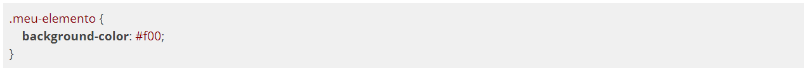
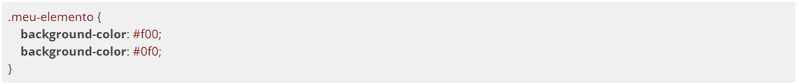
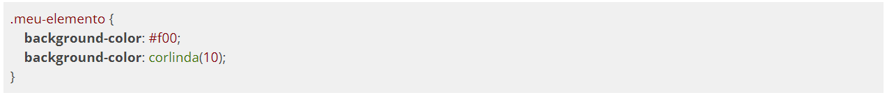

Vamos acabar encontrando casos de incompatibilidade de propriedades CSS com os browsers que usamos. Nem todas as pessoas atualizam seus browsers, seja por não saber atualizar, por uma feature específica daquela versão, compatibilidade com o sistema operacional, etc... por conta disso, algumas propriedades CSS que usamos não vão funcionar em todos os browsers. Vimos em capítulos anteriores que o site caniuse.com mostra um gráfico falando sobre compatibilidade de propriedades CSS com diversas versões de browsers, e a idéia de usar esse site é por conta das métricas que ele nos apresenta. Uma dessas métricas é a quantidade de usuários utilizando versões diferentes de browsers.
Vamos ver o exemplo baixo:

No exemplo nós colocamos uma cor de fundo vermelha num elemento que possui a classe meu-elemento. Agora vamos observar o exemplo abaixo:

Agora o navegador vai ler primeiro a cor vermelha e depois vai substituir pela cor verde porque estamos usando a mesma propriedade no mesmo elemento, ou seja, quem for declarado por último ganha a preferência. Agora vamos ver mais um exemplo.

A função corlinda() não é um CSS válido portanto o navegador vai ler a cor vermelha primeiro e depois vai tentar ler a função, mas como essa função não existe o navegador vai ignorar a sobrescrita e vai manter a cor de fundo vermelha.
Essa é a maneira mais ideal de manter compatibilidade com browsers mais antigos. Seguindo o conceito de Progressive Enhancement, começamos a colocar nossas propriedades baseadas nos navegadores mais antigos e depois vamos crescendo para propriedades mais novas de navegadores mais novos, assim naturalmente vamos deixando nosso site responsivo e compatível com diversos navegadores.